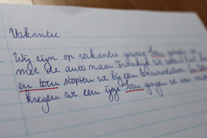

Na de zomervakanties kwamen mijn zus en ik terug op de basisschool en mochten wij samen met onze medeleerlingen onze belevenissen opschrijven. Misschien herken je het nog van jezelf, je klasgenoten van toen of van je eigen kinderen: elk verhaal bevatte een behoorlijk “en toen” gehalte.
 Met deze woorden gaven wij onze juf of meester het signaal dat de door ons beschreven gebeurtenissen zich in een chronologische volgorde afspeelden.
Nu we ouder zijn, gebruiken we ook nog signaalwoorden in teksten en zijn zij (hopelijk) een stuk gevarieerder.
Maar wat zijn signaalwoorden en wat kunnen ze voor je lezer betekenen? Dat probeer ik vandaag uit te leggen.
Signaalwoorden verbinden
Signaalwoorden geven structuur aan een webtekst en maken een tekst scanbaar. Net als koppen, alinea’s, opsommingen en witregels. Een ander woord voor signaalwoorden is “verbindingswoorden”: ze verbinden zinnen, alinea’s en zinsdelen met elkaar.
Welke verbanden zijn er?
Signaalwoorden geven de lezer een seintje welke verbanden we tussen de verschillende zinnen of alinea’s kunnen verwachten. Zo weet je dat het woord “maar” een tegenstelling aankondigt en dat er na “dus” een conclusie komt.
Een conclusie en een tegenstelling zijn slechts twee mogelijke verbanden die je als lezer tegenkomt. Andere veel voorkomende verbanden zijn:
- Opsomming: ten eerste, ook, bovendien
- Tijd: eerst, daarna, vroeger
- Oorzaak/gevolg: daardoor, doordat
- Voorbeeld of toelichting: bijvoorbeeld, zoals
- Voorwaarde: indien, als, mits
- Doel/middel: door middel van, met als doel
- Samenvatting: kortom, al met al
- Reden/verklaring: want, omdat, namelijk
- Vergelijking: net als, zoals
Signaalwoorden in webteksten: conclusie
Webbezoekers gaan haastig te werk en scannen pagina’s af, op zoek naar relevante informatie. Tijd om zelf verbanden tussen zinnen of tekstdelen te leggen, hebben zij dus niet. Door gebruik te maken van signaalwoorden in je webteksten, help je de lezer deze verbanden te leggen en zullen zij jouw tekst sneller begrijpen!
Laat je reactie achter!
Bronnen:
www.taalislol.classy.be
www.slideshare.net
puntann.nl